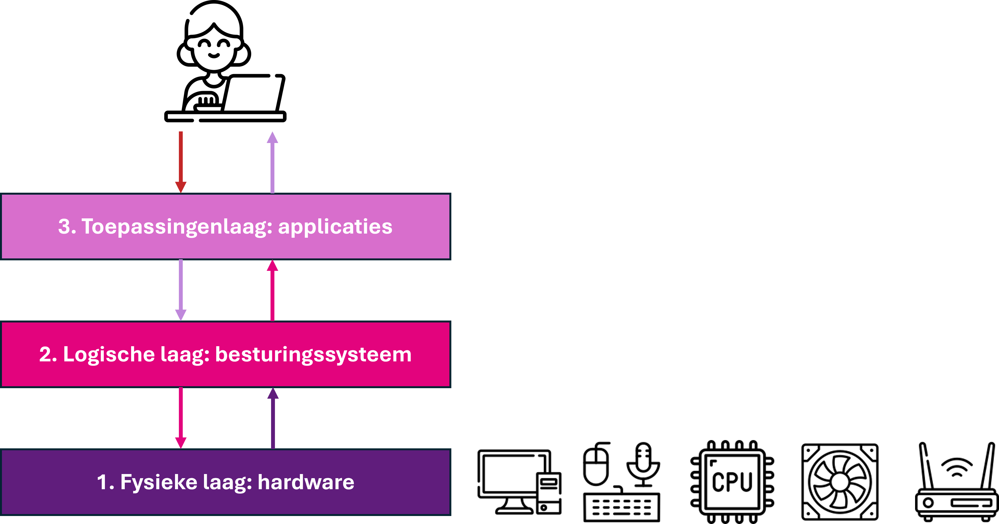
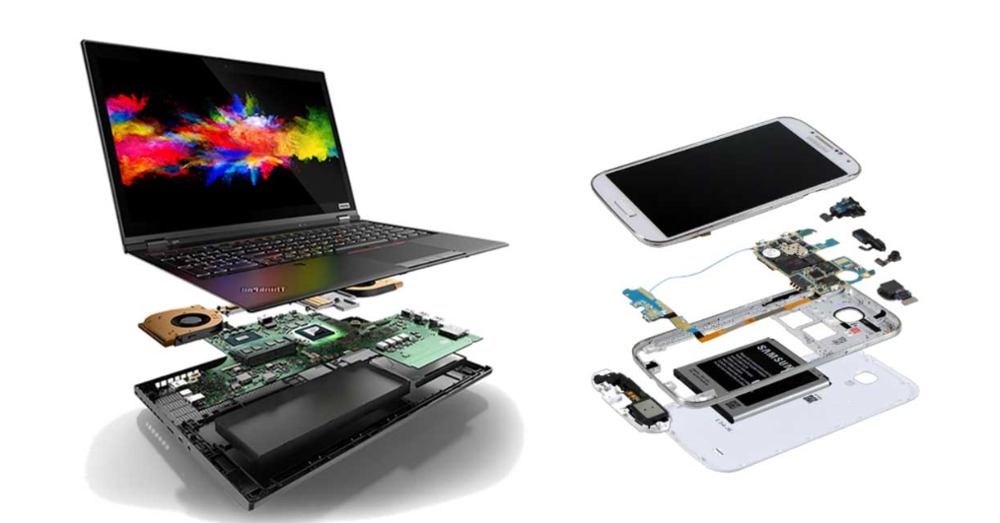
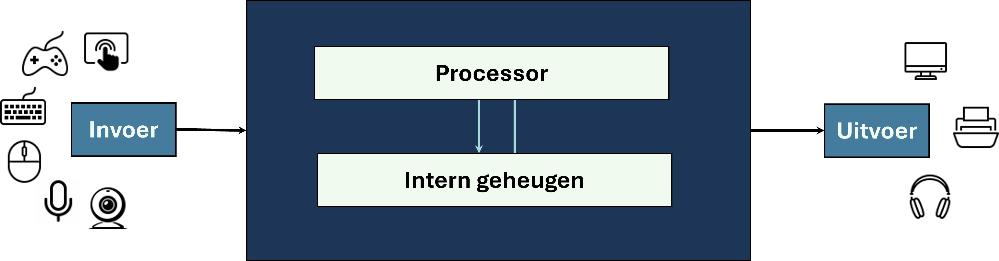

In het vorige hoofdstuk heb je kennisgemaakt met het drielagenmodel. Dat bestaat uit de fysieke laag, de logische laag en de toepassingenlaag. In dit hoofdstuk zoom je in op de fysieke laag. Wat valt daar allemaal onder, en hoe werkt het?

De fysieke laag in het drielagenmodel.

Fysieke laag
Niet elk apparaat heeft dezelfde hardware. Een simpele rekenmachine heeft andere onderdelen dan een spelcomputer of een smartphone. Wat een apparaat nodig heeft, hangt af van wat het moet doen. Toch hebben bijna alle digitale apparaten — van laptops tot telefoons — een paar belangrijke dingen gemeen. Ze hebben allemaal een manier om informatie binnen te krijgen (invoer), iets dat die informatie verwerkt (processor), een plek om gegevens tijdelijk op te slaan (intern geheugen), en een manier om informatie terug te geven aan de gebruiker (uitvoer). Dit basisprincipe wordt de Von Neumann-architectuur genoemd. Het is vernoemd naar de Hongaarse wiskundige en natuurkundige John von Neumann, die dit model in 1945 beschreef.

De Von Neumann-architectuur.
We beginnen met een uitleg van De Von Neumann-architectuur. Daarna bekijken we de onderdelen van een computer één voor één: wat ze doen, hoe ze samenwerken, en waar je op moet letten als je zelf een computer zou samenstellen.
Dit hoofdstuk gaat in op de fysieke laag van de drielagenmodel - de hardware van een digitaal apparaat. Je leert hoe je een je een computer kunt beschrijven met behulp van het Von Neumann-model. Je leert welke onderdelen bij de fysieke laag horen en wat die doen. Ook ontdek je hoe deze onderdelen met elkaar samenwerken. Tot slot leer je hoe de fysieke laag informatie doorgeeft aan de logische laag, zoals het besturingssysteem. Dat is belangrijk, want je hebt eerder geleerd dat de drie lagen in het drielagenmodel moeten samenwerken om een apparaat goed te laten functioneren.
Test jezelf! Kijk of je alle vragen hieronder met “ja” kunt beantwoorden. Niet gelukt? Lees dan de theorie en opdrachten en probeer het nog eens – nu lukt het vast wel!
| Vraag | Ja | Nee |
|---|---|---|
| Kun jij uitleggen hoe een computer werkt volgens de Von Neumann-architectuur? | ||
| Kun jij de belangrijkste onderdelen van de fysieke laag noemen en uitleggen wat ze doen? | ||
| Kun jij beschrijven hoe de onderdelen in de fysieke laag met elkaar samenwerken? | ||
| Kun jij uitleggen hoe de fysieke laag informatie doorgeeft aan het besturingssysteem (logische laag)? |